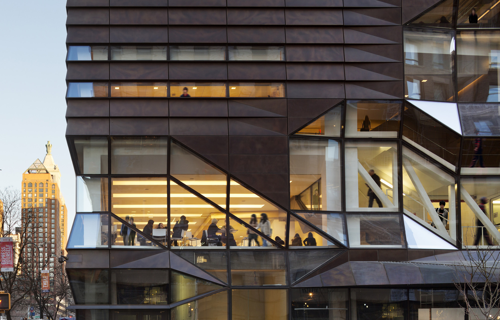
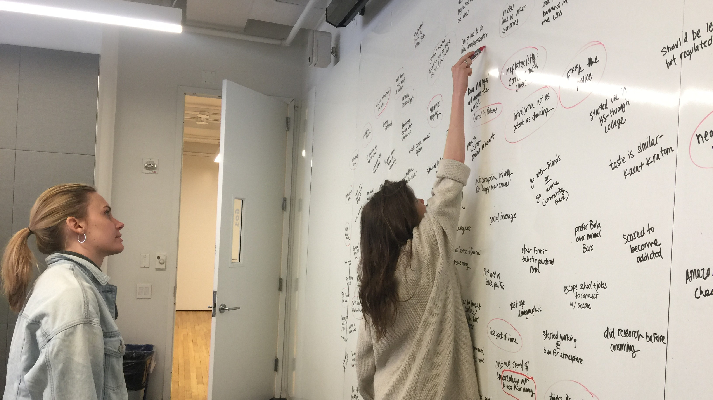
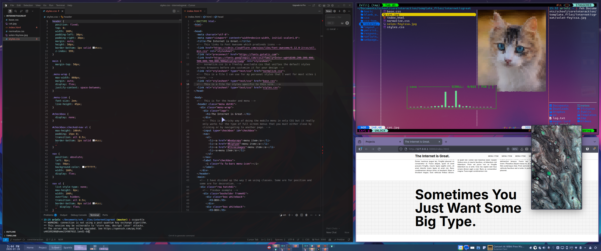

Teaching
As an associate professor at Parsons, The New School for Design, I have developed the syllabi and taught the following courses:
+ Emergent Objects
+ Research and Development Methods
+ Physical Computing
+ Project Management
+ Core Interaction Design
+ Creative Computing
+ Design 1: Communication Design
+ Design 2: Communication Design II
+ Design 3: Typography
+ Design 4: Information Design and Data Visualization

My teaching approach combines hands-on experimentation with theoretical foundations, helping students develop both technical skills and creative problem-solving abilities.
Design research methodologies are integrated into the in-class activities. These methods enhance creativity, surface quieter voices, and contribute to the neurological rewards of learning.

Teaching Philosophy
Pedagogy
I believe in learning by doing. My courses emphasize hands-on projects that allow students to explore concepts through experimentation and iteration.
Each project is designed to build on previous skills while introducing new challenges, creating a scaffolded learning experience that supports students at all levels.
Open Resources
All of my course materials are openly available on GitHub, making them accessible to students and the broader community. This approach promotes transparency, collaboration, and continued learning beyond the classroom.
Students learn professional workflows using version control, issue tracking, and collaborative development practices used in the industry.
Learning Management
I integrate modern Learning Management Systems like Canvas to create structured, accessible course experiences. This includes clear assignment guidelines, rubrics, and timely feedback.
The combination of Canvas for administration and GitHub for technical work creates a comprehensive learning environment that prepares students for professional practice.
Teaching Statement

My comprehensive teaching philosophy document covering pedagogical approach, classroom methods, and assessment strategies.
Courses
Emergent Objects
A unique course exploring the intersection of physical computing and user experience design. Students learn to create interactive objects for a speculative utopia/dystopia.
Topics covered:
+ Product documentation
+ Personas
+ User journeys
+ Electricity fundamentals
+ Microcontroller programming
+ Analog and digital input/output
+ Acrylic design and fabrication
+ User testing
Core Interaction
A foundational course in interactive web design and development. Students progress from basic HTML and CSS to complex JavaScript interactions and animations.
Topics covered:
+ HTML structure and semantics
+ CSS styling and layout (Flexbox, Grid)
+ JavaScript fundamentals
+ DOM manipulation
+ Interactive animations
+ Responsive design
+ JSON data handling

Research & Development Methods
A course focused on research methodologies, ethical practices, and development processes for design and technology projects at Parsons, The New School.
Key components:
+ Research methodologies
+ Ethical research practices
+ Project development workflows
+ Documentation and presentation
+ Critical analysis and evaluation


Areas of Instruction
Design & Typography
Visual communication, typographic systems, layout design, and design thinking methodologies.
Web Development
Frontend development, responsive design, JavaScript programming, and modern web technologies.
Physical Computing
Arduino, sensors, actuators, electronics fundamentals, and interactive hardware prototyping.
Digital Fabrication
3D modeling, laser cutting, 3D printing, and computer-aided design for physical objects.